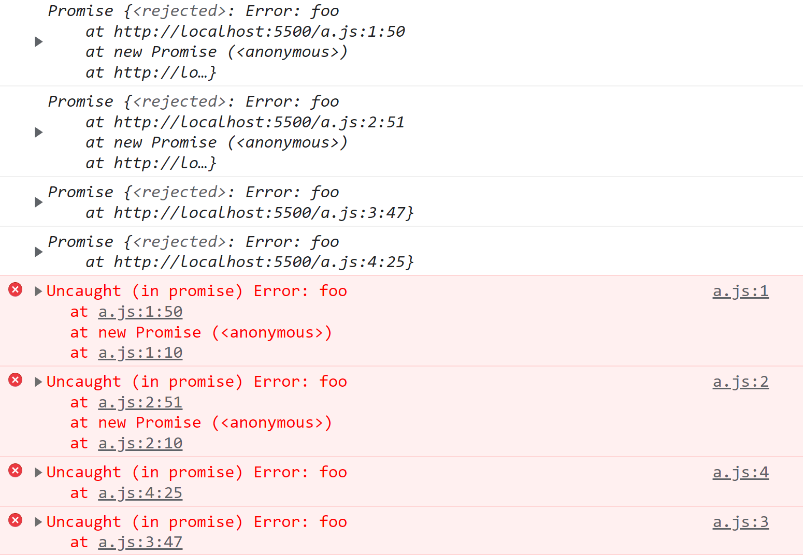

【JavaScript红宝书】25.期约和异步函数
1 期约的状态
1.1 期约的三种状态
通过实例化 Promise 来定义一个期约对象，实例化期约时必须传入一个执行器函数：
let p = new Promise(()=>{})
setTimeout(console.log, 0, p) // Promise { <pending> }解释：
setTimeout(console.log, 0, p)可以打印出期约的状态 。
期约可能处于以下3种状态：
- 待定，pending
- 兑现，fulfilled 也叫 resolved
- 拒绝，rejected
最初，期约处于 pending 状态。处于 pending 状态的期约可以落定为 resolved 状态或者 rejected 状态。期约状态落定后不可更改。期约的状态是私有的，无法通过 JavaScript 代码检测到，也不能通过期约外部的 JavaScript 代码来修改期约的状态。
1.2 期约的解决值或拒绝理由
期约的状态代表期约是否完成，pending 代表尚未开始或者未完成，resolved 代表已成功完成，rejected 代表未成功完成。比如，期约向服务器发送请求。如果响应的状态码是200，那么期约就把状态改为 resolved；如果响应的状态码是404，那么期约就把状态改为 rejected。
期约成功完成时可能需要返回一个解决值（value），未成功完成时可能需要返回一个拒绝理由（reason）。这两个值是可选的，并且默认值是 undefined。比如在前面的例子中，期约收到的200状态码的响应时，需要返回响应体；收到404状态码的响应时，需要返回错误信息。
const p = new Promise((resolve, reject)=>{resolve('foo')})
setTimeout(console.log, 0, p) // Promise {<fulfilled>: 'foo'} 解决值const p = new Promise((resolve, reject)=>{reject('bar')}) // 报错：Uncaught (in promise) bar
setTimeout(console.log, 0, p) // Promise {<rejected>: 'bar'} 拒绝理由1.3 控制期约的状态
通过调用执行器函数的两个参数可以控制期约的状态，这两个函数一般会被命名为 resolve() 和 reject()。调用resolve() 可以把期约状态从 pending 改为 resolved，调用 reject() 可以把期约状态从 pending 改为 rejected。调用 reject() 也会抛出错误，这个错误不能被 try-catch 捕获，只能由拒绝处理程序捕获。
let p = new Promise((resolve, reject)=>{
resolve()
})
setTimeout(console.log, 0, p) // Promise {<fulfilled>: undefined}let p = new Promise((resolve, reject)=>{
reject()
})
setTimeout(console.log, 0, p)
// Promise {<rejected>: undefined}
// 报错：Uncaught (in promise) undefined 当 resolve() 或者 reject() 被调用之后，期约的状态就不能再变了。再调用 resolved() 或者 reject() 会静默失败。
let p = new Promise((resolve, reject)=>{
reject()
resolve() // 没有效果
})期约的状态不是只能从 pending 开始，可以直接创建 resolved 状态或者 rejected 状态的期约。
1.4 Promise.resolve() 创建已解决的期约
通过 Promise.resolve() 可以实例化一个已解决的期约，解决值就是传入的第一个参数：
let p = Promise.resolve('foo')
setTimeout(console.log, 0, p) // Promise {<fulfilled>: 'foo'}Promise.resolve() 是一个幂等方法，如果传入的参数是一个期约，那么它的行为类似一个空包装：
let p1 = Promise.resolve('foo')
let p2 = Promise.resolve(p1)
setTimeout(console.log, 0, p2) // Promise {<fulfilled>: 'foo'}
console.log(p1 === p2) // truelet p1 = Promise.reject('bar')
let p2 = Promise.resolve(p1)
setTimeout(console.log, 0, p2) // Promise {<rejected>: 'bar'} 报错：Uncaught (in promise) bar
setTimeout(console.log, 0, p1 === p2) // true1.5 Promise.reject() 创建被拒绝的期约
通过 Promise.reject() 可以创建一个被拒绝的期约（会抛出一个异步异常），拒绝原因就是传入的第一个参数。这个参数也会传给后续的处理程序：
let p1 = Promise.reject('foo')
p1.then(null, (e)=>console.log(e)) // fooPromise.reject() 不是幂等的，如果传给它一个期约对象，这个期约对象会成为它的拒绝原因。
let p1 = Promise.resolve('foo')
let p2 = Promise.reject(p1)
setTimeout(console.log, 0, p2) // Promise {<rejected>: Promise}
//报错：Uncaught (in promise) Promise {<fulfilled>: 'foo'}2 期约的实例方法
期约实例的方法是连接外部同步代码与内部异步代码之间的桥梁。这些方法可以访问异步操作返回的数据，处理期约成功和失败的结果，连续对期约求值，或者添加只有期约进入终止状态时才会执行的代码。
2.1 then()
then() 是为期约添加处理程序的主要方法。then() 方法主要接受两个函数参数：onResolved() 处理程序和 onRejected() 处理程序。这两个参数都是可选的，如果提供的话， 则会在期约分别进入 resolved 或 rejected 状态时执行。
function onResolved(value){
console.log(value)
}
function onRejected(reason){
console.log(reason)
}
const p = new Promise((resolve, reject)=>{
resolve('foo')
})
p.then(onResolved, onRejected) // foothen() 返回一个新的期约实例：
const p1 = new Promise(()=>{})
const p2 = p1.then() // 新期约
setTimeout(console.log, 0, p1) // Promise {<pending>}
setTimeout(console.log, 0, p2) // Promise {<pending>}
setTimeout(console.log, 0, p1 === p2) // false这个新期约（p2）实例基于 onResovled() 和 onRejected() 处理程序的返回值构建。如果上一个期约（p1）是 resolve 状态，则通过 onResovled() 返回值来构建 then()返回的期约（p2）；如果上一个期约是 rejected 状态，则通过 onRejected() 返回值来构建 then() 返回的期约（p2）。
const p1 = Promise.resolve('bar')
const p2 = p1.then((x) => { return x + '!' }, (e) => { return e + '@' })
setTimeout(console.log, 0, 'p1', p1) // p1 Promise {<fulfilled>: 'bar'}
setTimeout(console.log, 0, 'p2', p2) // p2 Promise {<fulfilled>: 'bar!'}const p1 = Promise.reject('bar')
const p2 = p1.then((x) => { return x + '!' }, (e) => { return e + '@' })
setTimeout(console.log, 0, 'p1', p1) // p1 Promise {<rejected>: 'bar'}
setTimeout(console.log, 0, 'p2', p2) // p2 Promise {<fulfilled>: 'bar@'}2.1.1 当期约落定为 resolved 状态时
如果期约（p1）落定为 resolved 状态，那么它的 then() 方法总是返回一个新的期约值，该值有3种情况：
- 如果提供了 onResovled() 处理程序，then() 方法返回的期约值是 Promise.resolve() 包装上 onResovled() 处理程序的返回值。
- 如果没有提供 onResovled() 处理程序，then() 方法返回的期约值是 Promise.resolve() 包装上一个期约（p1）解决之后的值。
- 如果提供了 onResovled() 处理程序，但是没有显式的返回语句，then() 方法返回的期约值是 Promise.resolve()包装默认的返回值 undefined。
const p1 = Promise.resolve('foo')
// 不传处理程序时，状态向后传递。p2值就是 Promise.resolve() 包装上p1
const p2 = p1.then()
setTimeout(console.log, 0, p2) // Promise {<fulfilled>: 'foo'}
setTimeout(console.log, 0, p1 === p2) // false
// 没有显式返回值，则返回undefined包装值
const p3 = p1.then(() => undefined)
const p4 = p1.then(() => { })
const p5 = p1.then(() => Promise.resolve())
setTimeout(console.log, 0, p3) // Promise {<fulfilled>: undefined}
setTimeout(console.log, 0, p4) // Promise {<fulfilled>: undefined}
setTimeout(console.log, 0, p5) // Promise {<fulfilled>: undefined}
// 如果有显式返回值，Promise.resolve() 会包装这个值
const p6 = p1.then(() => 'bar')
const p7 = p1.then(() => Promise.resolve('bar'))
setTimeout(console.log, 0, p6) // Promise {<fulfilled>: 'bar'}
setTimeout(console.log, 0, p7) // Promise {<fulfilled>: 'bar'}
// Promise.resolve() 会保留返回的期约
const p8 = p1.then(() => new Promise(() => { }))
const p9 = p1.then(() => Promise.reject()) // 报错
setTimeout(console.log, 0, p8) // Promise {<pending>}
setTimeout(console.log, 0, p9) // Promise {<rejected>: undefined}
// 抛出异常会返回拒绝的期约
const p10 = p1.then(()=> {throw new Error('bar')}) // 报错
setTimeout(console.log, 0, p10) // Promise {<rejected>: Error: bar} 2.1.2 当期约落定为 rejected 状态时
如果期约（p1）落定为 rejected 状态，那么它的 then() 方法总是返回一个新的期约值。和期约落定为 resolved 状态一样，该值有3种情况：
- 如果提供了 onRejected() 处理程序，then() 方法返回的期约值是 Promise.resolve() 包装上 onRejected() 处理程序的返回值。
- 如果没有提供 onRejected() 处理程序，then() 方法返回的期约值是 Promise.resolve() 包装上一个期约（p1）解决之后的值。
- 如果提供了 onRejected() 处理程序，但是没有显式的返回语句，then() 方法返回的期约值是 Promise.resolve()包装默认的返回值 undefined。
const p1 = Promise.reject('foo')
// 不传处理程序时，状态向后传递。p2值就是 Promise.resolve() 包装上p1
const p2 = p1.then() // 报错
setTimeout(console.log, 0, p2) // Promise {<rejected>: 'foo'}
setTimeout(console.log, 0, p1 === p2) // false
// 没有显式返回值，则返回undefined包装值
const p3 = p1.then(null, () => undefined)
const p4 = p1.then(null, () => { })
const p5 = p1.then(null, () => Promise.resolve())
setTimeout(console.log, 0, p3) // Promise {<fulfilled>: undefined}
setTimeout(console.log, 0, p4) // Promise {<fulfilled>: undefined}
setTimeout(console.log, 0, p5) // Promise {<fulfilled>: undefined}
// 如果有显式返回值，Promise.resolve() 会包装这个值
const p6 = p1.then(null, () => 'bar')
const p7 = p1.then(null, () => Promise.resolve('bar'))
setTimeout(console.log, 0, p6) // Promise {<fulfilled>: 'bar'}
setTimeout(console.log, 0, p7) // Promise {<fulfilled>: 'bar'}
// Promise.resolve() 会保留返回的期约
const p8 = p1.then(null, () => new Promise(() => { }))
const p9 = p1.then(null, () => Promise.reject()) // 报错
setTimeout(console.log, 0, p8) // Promise {<pending>}
setTimeout(console.log, 0, p9) // Promise {<rejected>: undefined}
// 抛出异常会返回拒绝的期约
const p10 = p1.then(() => { throw new Error('bar') }) // 报错
setTimeout(console.log, 0, p10) // Promise {<rejected>: 'foo'} 2.2 catch()
catch() 方法用于给期约添加拒绝处理程序。这个方法只接收一个参数： onRejected() 处理程序。事实上，这个方法就是一个语法糖，调用它就相当于调用 then(null, onRejected)。
const p1 = Promise.reject('foo')
p2 = p1.then(null, (reason) => { return reason })
p3 = p1.catch((reason) => { return reason }) // 语法糖
setTimeout(console.log, 0, p2) // Promise {<fulfilled>: 'foo'}
setTimeout(console.log, 0, p3) // Promise {<fulfilled>: 'foo'}
setTimeout(console.log, 0, p2 === p3) // false2.3 finally()
finally()方法用于给期约添加 onFinally() 处理程序，这个处理程序在期约转换为解决或拒绝状态时都会执行。这个方法可以避免 onResolved 和 onRejected 处理程序中出现冗余代码。但 onFinally() 处理程序没有办法知道期约的状态是解决还是拒绝，所以这个方法主要用于添加清理代码。
let p1 = Promise.resolve();
let p2 = Promise.reject();
let onFinally = function () {
setTimeout(console.log, 0, 'Finally!')
}
p1.finally(onFinally); // Finally
p2.finally(onFinally); // Finallyfinally()方法返回一个新的期约实例，这个新期约实例不同于 then()或 catch()方式返回的实例。因为 onFinally 被设计为一个状态无关的方法，所以在大多数情况下它将表现为父期约的传递。对于已解决状态和被拒绝状态都是如此。
let p1 = Promise.resolve('foo');
// 这里都会原样后传
let p2 = p1.finally();
let p3 = p1.finally(() => undefined);
let p4 = p1.finally(() => {});
let p5 = p1.finally(() => Promise.resolve());
let p6 = p1.finally(() => 'bar');
let p7 = p1.finally(() => Promise.resolve('bar'));
let p8 = p1.finally(() => Error('qux'));
setTimeout(console.log, 0, p2); // Promise <resolved>: foo
setTimeout(console.log, 0, p3); // Promise <resolved>: foo
setTimeout(console.log, 0, p4); // Promise <resolved>: foo
setTimeout(console.log, 0, p5); // Promise <resolved>: foo
setTimeout(console.log, 0, p6); // Promise <resolved>: foo
setTimeout(console.log, 0, p7); // Promise <resolved>: foo如果返回的是一个待定的期约，或者 onFinally() 处理程序抛出了错误（显式抛出或返回了一个拒绝期约），则会返回相应的期约（待定或拒绝）：
// Promise.resolve()保留返回的期约
let p9 = p1.finally(() => new Promise(() => {}));
let p10 = p1.finally(() => Promise.reject()); // Uncaught (in promise): undefined
setTimeout(console.log, 0, p9); // Promise <pending>
setTimeout(console.log, 0, p10); // Promise <rejected>: undefined
let p11 = p1.finally(() => { throw 'baz'; }); // Uncaught (in promise) baz
setTimeout(console.log, 0, p11); // Promise <rejected>: baz返回待定期约的情形并不常见，这是因为只要期约一解决，新期约仍然会原样后传初始的期约：
let p1 = Promise.resolve('foo');
// 忽略解决的值
let p2 = p1.finally(
() => new Promise(
(resolve, reject) => setTimeout(() => resolve('bar'), 100)
)
);
setTimeout(console.log, 0, p2); // Promise <pending>
setTimeout(() => setTimeout(console.log, 0, p2), 200);
// 200 毫秒后：
// Promise <resolved>: foo 3 期约实例方法的特性
3.1 非重入特性
当期约进入落定状态时，与该状态相关的处理程序仅仅会被排期，而非立即执行。跟在添加这个处理程序的代码之后的同步代码一定会在处理程序之前先执行。即使期约一开始就是与附加处理程序关联的状态，执行顺序也是这样的。这个特性由 JavaScript 运行时保证，被称为“非重入”（non-reentrancy） 特性。
const p1 = new Promise((resolve, reject) => { resolve('foo') })
p1.then((value)=>console.log(value)) // 2. 再执行这条语句
console.log('bar') // 1. 先执行这条语句
// 先输出 bar，再输出 foo在这个例子中，在一个解决期约上调用 then() 会把 onResolved 处理程序推进消息队列。但这个处理程序在当前线程上的同步代码执行完成前不会执行。因此，跟在 then()后面的同步代码一定先于处理程序执行。
先添加处理程序后解决期约也是一样的。如果添加处理程序后，同步代码才改变期约状态，那么处理程序仍然会基于该状态变化表现出非重入特性。
let synchronousResolve;
// 创建一个期约并将解决函数保存在一个局部变量中
let p = new Promise((resolve) => {
synchronousResolve = function () {
console.log('1: invoking resolve()'); // 1
resolve();
console.log('2: resolve() returns'); // 2
};
});
p.then(() => console.log('4: then() handler executes')); // 4
synchronousResolve();
console.log('3: synchronousResolve() returns'); // 3注：非重入特性适用于onResolved/onRejected 处理程序、then()处理程序、catch() 处理程序和 finally() 处理程序。
3.2 临近处理程序的执行顺序
如果给期约添加了多个处理程序，当期约状态变化时，相关处理程序会按照添加它们的顺序依次执行。无论是 then()、catch()还是 finally()添加的处理程序都是如此。
3.3 传递解决值或拒绝理由
到了落定状态后，期约会提供其解决值（如果兑现）或其拒绝理由（如果拒绝）给相关状态的处理程序。拿到返回值后，就可以进一步对这个值进行操作。
在执行函数中，解决的值和拒绝的理由是分别作为 resolve() 和 reject() 的第一个参数往后传的。然后，这些值又会传给它们各自的处理程序，作为 onResolved() 或 onRejected() 处理程序的唯一参数。
let p1 = new Promise((resolve, reject) => resolve('foo'));
p1.then((value) => console.log(value)); // foo
let p2 = new Promise((resolve, reject) => reject('bar'));
p2.catch((reason) => console.log(reason)); // bar Promise.resolve()和 Promise.reject()在被调用时就会接收解决值和拒绝理由。同样地，它们返回的期约也会像执行器一样把这些值传给 onResolved() 或 onRejected() 处理程序。
let p1 = Promise.resolve('foo');
p1.then((value) => console.log(value)); // foo
let p2 = Promise.reject('bar');
p2.catch((reason) => console.log(reason)); // bar 3.4 拒绝期约和拒绝错误处理
拒绝期约类似于 throw() 表达式，因为它们都代表一种程序状态，即需要中断或者特殊处理。在期约的执行函数或处理程序中抛出错误会导致拒绝，对应的错误对象会成为拒绝的理由。因此以下这些期约都会以一个错误对象为由被拒绝：
let p1 = new Promise((resolve, reject) => reject(Error('foo')));
let p2 = new Promise((resolve, reject) => { throw Error('foo'); });
let p3 = Promise.resolve().then(() => { throw Error('foo'); });
let p4 = Promise.reject(Error('foo'));
setTimeout(console.log, 0, p1); // Promise <rejected>: Error: foo
setTimeout(console.log, 0, p2); // Promise <rejected>: Error: foo
setTimeout(console.log, 0, p3); // Promise <rejected>: Error: foo
setTimeout(console.log, 0, p4); // Promise <rejected>: Error: foo
// 也会抛出4个未捕获的错误期约可以以任何理由拒绝，包括 undefined，但最好统一使用 Error 错误对象。这样做主要是因为创建 Error 错误对象可以让浏览器捕获错误对象中的栈追踪信息，而这些信息对调试是非常关键的。
所有错误都是异步抛出且未处理的，通过错误对象捕获的栈追踪信息展示了错误发生的路径。注意错误的顺序：Promise.resolve().then() 的错误最后才出现，这是因为它需要在运行时消息队列中添加处理程序；也就是说，在最终抛出未捕获错误之前它还会创建另一个期约。
这个例子同样揭示了异步错误有意思的副作用。正常情况下，在通过 throw() 关键字抛出错误时， JavaScript 运行时的错误处理机制会停止执行抛出错误之后的任何指令：
throw Error('foo');
console.log('bar'); // 这一行不会执行
// Uncaught Error: foo但是，在期约中抛出错误时，因为错误实际上是从消息队列中异步抛出的，所以并不会阻止运行时继续执行同步指令：
Promise.reject(Error('foo'));
console.log('bar'); // 这一行会执行
// bar
// Uncaught (in promise) Error: foo如本章前面的 Promise.reject() 示例所示，异步错误只能通过异步的 onRejected 处理程序捕获：
// 正确
Promise.reject(Error('foo')).catch((e) => {});
// 不正确，还是无法捕获错误
try {
Promise.reject(Error('foo'));
} catch(e) {}这不包括捕获执行函数中的错误，在解决或拒绝期约之前，仍然可以使用 try/catch 在执行函数中捕获错误：
let p = new Promise((resolve, reject) => {
try {
throw Error('foo');
} catch(e) {}
resolve('bar');
});
setTimeout(console.log, 0, p); // Promise <resolved>: barthen()和 catch()的 onRejected 处理程序在语义上相当于 try/catch。出发点都是捕获错误之后将其隔离，同时不影响正常逻辑执行。为此，onRejected 处理程序的任务应该是在捕获异步错误之后返回一个解决的期约。下面的例子中对比了同步错误处理与异步错误处理：
console.log('begin synchronous execution');
try {
throw Error('foo');
} catch(e) {
console.log('caught error', e);
}
console.log('continue synchronous execution');
// begin synchronous execution
// caught error Error: foo
// continue synchronous execution
new Promise((resolve, reject) => {
console.log('begin asynchronous execution');
reject(Error('bar'));
}).catch((e) => {
console.log('caught error', e);
}).then(() => {
console.log('continue asynchronous execution');
});
// begin asynchronous execution
// caught error Error: bar
// continue asynchronous execution4 期约连锁与期约合成
多个期约组合在一起可以构成强大的代码逻辑。这种组合可以通过两种方式实现：期约连锁与期约合成。前者就是一个期约接一个期约地拼接，后者则是将多个期约组合为一个期约。
4.1 期约连锁
把期约逐个地串联起来是一种非常有用的编程模式。之所以可以这样做，是因为每个期约实例的方法，比如then()、catch()和 finally()，都会返回一个新的期约对象，而这个新期约又有自己的实例方法。这样连缀方法调用就可以构成所谓的“期约连锁”。
let p = new Promise((resolve, reject) => {
console.log('first');
resolve();
});
p.then(() => console.log('second'))
.then(() => console.log('third'))
.then(() => console.log('fourth'));
// first
// second
// third
// fourth 这个实现最终执行了一连串同步任务。正因为如此，这种方式执行的任务没有那么有用，毕竟分别使用 4 个同步函数也可以做到：
(() => console.log('first'))();
(() => console.log('second'))();
(() => console.log('third'))();
(() => console.log('fourth'))();要真正执行异步任务，可以改写前面的例子，让每个执行器都返回一个期约实例。这样就可以让每 个后续期约都等待之前的期约，也就是串行化异步任务。比如，可以像下面这样让每个期约在一定时间后解决：
let p1 = new Promise((resolve, reject) => {
console.log('p1 executor');
setTimeout(resolve, 1000);
});
p1.then(() => new Promise((resolve, reject) => {
console.log('p2 executor');
setTimeout(resolve, 1000);
}))
.then(() => new Promise((resolve, reject) => {
console.log('p3 executor');
setTimeout(resolve, 1000);
}))
.then(() => new Promise((resolve, reject) => {
console.log('p4 executor');
setTimeout(resolve, 1000);
}));
// p1 executor（1 秒后）
// p2 executor（2 秒后）
// p3 executor（3 秒后）
// p4 executor（4 秒后）每个后续的处理程序都会等待前一个期约解决，然后实例化一个新期约并返回它。这种结构可以简洁地将异步任务串行化，解决之前依赖回调的难题。
因为 then()、catch()和 finally()都返回期约，所以串联这些方法也很直观。
let p = new Promise((resolve, reject) => {
console.log('initial promise rejects');
reject();
});
p.catch(() => console.log('reject handler'))
.then(() => console.log('resolve handler'))
.finally(() => console.log('finally handler'));
// initial promise rejects
// reject handler
// resolve handler
// finally handler4.2 期约合成
Promise 提供两个将多个期约实例组合成一个期约的静态方法：Promise.all() 和 Promise.race()。 而合成后期约的行为取决于内部期约的行为。
4.2.1 Promise.all()
Promise.all() 静态方法创建的期约会在一组期约全部解决之后再解决。这个静态方法接收一个可迭代对象，返回一个新期约：
let p1 = Promise.all([
Promise.resolve(),
Promise.resolve()
]);
// 可迭代对象中的元素会通过 Promise.resolve()转换为期约
let p2 = Promise.all([3, 4]);
// 空的可迭代对象等价于 Promise.resolve()
let p3 = Promise.all([]);
// 无效的语法
let p4 = Promise.all(); // TypeError: cannot read Symbol.iterator of undefined合成的期约只会在每个包含的期约都解决之后才解决：
let p = Promise.all([
Promise.resolve(),
new Promise((resolve, reject) => setTimeout(resolve, 1000))
]);
setTimeout(console.log, 0, p); // Promise <pending>
p.then(() => setTimeout(console.log, 0, 'all() resolved!'));
// all() resolved!（大约 1 秒后）如果至少有一个包含的期约待定，则合成的期约也会待定。如果有一个包含的期约拒绝，则合成的期约也会拒绝：
// 永远待定
let p1 = Promise.all([new Promise(() => { })]);
setTimeout(console.log, 0, p1); // Promise <pending>
// 一次拒绝会导致最终期约拒绝
let p2 = Promise.all([
Promise.resolve(),
Promise.reject(),
Promise.resolve()
]);
setTimeout(console.log, 0, p2); // Promise <rejected>
// Uncaught (in promise) undefined如果所有期约都成功解决，则合成期约的解决值就是所有包含期约解决值的数组，按照迭代器顺序：
let p = Promise.all([
Promise.resolve(3),
Promise.resolve(),
Promise.resolve(4)
]);
p.then((values) => setTimeout(console.log, 0, values)); // [3, undefined, 4]如果有期约拒绝，则第一个拒绝的期约会将自己的理由作为合成期约的拒绝理由。之后再拒绝的期约不会影响最终期约的拒绝理由。不过，这并不影响所有包含期约正常的拒绝操作。合成的期约会静默处理所有包含期约的拒绝操作：
// 虽然只有第一个期约的拒绝理由会进入
// 拒绝处理程序，第二个期约的拒绝也
// 会被静默处理，不会有错误跑掉
let p = Promise.all([
Promise.reject(3),
new Promise((resolve, reject) => setTimeout(reject, 1000))
]);
p.catch((reason) => setTimeout(console.log, 0, reason)); // 3
// 没有未处理的错误4.2.2 Promise.race()
Promise.race() 静态方法返回一个包装期约，是一组集合中最先解决或拒绝的期约的镜像（新期约）。这个方法接收一个可迭代对象，返回一个新期约：
let p1 = Promise.race([
Promise.resolve(),
Promise.resolve()
]);
// 可迭代对象中的元素会通过 Promise.resolve()转换为期约
let p2 = Promise.race([3, 4]);
// 空的可迭代对象等价于 new Promise(() => {})
let p3 = Promise.race([]);
// 无效的语法
let p4 = Promise.race();
// TypeError: cannot read Symbol.iterator of undefinedPromise.race()不会对解决或拒绝的期约区别对待。无论是解决还是拒绝，只要是第一个落定的期约，Promise.race()就会包装其解决值或拒绝理由并返回新期约：
// 解决先发生，超时后的拒绝被忽略
let p1 = Promise.race([
Promise.resolve(3),
new Promise((resolve, reject) => setTimeout(reject, 1000))
]);
setTimeout(console.log, 0, p1); // Promise <resolved>: 3
// 拒绝先发生，超时后的解决被忽略
let p2 = Promise.race([
Promise.reject(4),
new Promise((resolve, reject) => setTimeout(resolve, 1000))
]);
setTimeout(console.log, 0, p2); // Promise <rejected>: 4
// 迭代顺序决定了落定顺序
let p3 = Promise.race([
Promise.resolve(5),
Promise.resolve(6),
Promise.resolve(7)
]);
setTimeout(console.log, 0, p3); // Promise <resolved>: 5如果有一个期约拒绝，只要它是第一个落定的，就会成为拒绝合成期约的理由。之后再拒绝的期约不会影响最终期约的拒绝理由。不过，这并不影响所有包含期约正常的拒绝操作。与 Promise.all() 类似，合成的期约会静默处理所有包含期约的拒绝操作，如下所示：
// 虽然只有第一个期约的拒绝理由会进入
// 拒绝处理程序，第二个期约的拒绝也
// 会被静默处理，不会有错误跑掉
let p = Promise.race([
Promise.reject(3),
new Promise((resolve, reject) => setTimeout(reject, 1000))
]);
p.catch((reason) => setTimeout(console.log, 0, reason)); // 3
// 没有未处理的错误5 异步函数
异步函数，也称为“async/await”（语法关键字），是 ES6 期约模式在 ECMAScript 函数中的应用。 async/await 是 ES8 规范新增的。这个特性从行为和语法上都增强了 JavaScript，让以同步方式写的代码能够异步执行。
下面来看一个最简单的例子，这个期约在超时之后会解决为一个值。如果程序中的其他代码要在这个值可用时访问它，则需要写一个解决处理程序：
let p = new Promise((resolve, reject) => setTimeout(resolve, 1000, 3));
p.then((x) => console.log(x)); // 3这其实是很不方便的，因为其他代码都必须塞到期约处理程序中。
ES8 的 async/await 旨在解决利用异步结构组织代码的问题。为此，ECMAScript 对函数进行了扩展， 为其增加了两个新关键字：async 和 await。
5.1 async
async 关键字用于声明异步函数。这个关键字可以用在函数声明、函数表达式、箭头函数和方法上：
async function foo() { }
let bar = async function () { };
let baz = async () => { };
class Qux {
async qux() { }
}使用 async 关键字可以让函数具有异步特征，但总体上其代码仍然是同步求值的。而在参数或闭包方面，异步函数仍然具有普通 JavaScript 函数的正常行为。正如下面的例子所示，foo()函数仍然会在后面的指令之前被求值：
async function foo() {
console.log(1);
}
foo();
console.log(2);
// 1
// 2不过，异步函数如果使用 return 关键字返回了值（如果没有 return 则会返回 undefined），这个值会被 Promise.resolve() 包装成一个期约对象。异步函数始终返回期约对象。在函数外部调用这个函数可以得到它返回的期约：
async function foo() {
console.log(1);
return 3;
}
// 给返回的期约添加一个解决处理程序
foo().then(console.log);
console.log(2); // 先执行同步代码，再执行then方法中的异步代码
// 1
// 2
// 3 异步函数的返回值期待（但实际上并不要求）一个实现 thenable 接口的对象，但常规的值也可以。
如果返回的是实现 thenable 接口的对象，则这个对象可以由提供给 then() 的处理程序解包。
如果不是，则返回值就被当作已经解决的期约。
// 返回一个原始值
async function foo() {
return 'foo';
}
foo().then(console.log);
// foo
// 返回一个没有实现 thenable 接口的对象
async function bar() {
return ['bar'];
}
bar().then(console.log);
// ['bar']
// 返回一个实现了 thenable 接口的非期约对象，解包
async function baz() {
const thenable = {
then(callback) { callback('baz'); }
};
return thenable;
}
baz().then(console.log);
// baz
// 返回一个期约，解包
async function qux() {
return Promise.resolve('qux');
}
qux().then(console.log);
// qux与在期约处理程序中一样，在异步函数中抛出错误会返回拒绝的期约：
async function foo() {
console.log(1);
throw 3;
}
// 给返回的期约添加一个拒绝处理程序
foo().catch(console.log);
console.log(2);
// 1
// 2
// 3不过，拒绝期约的错误不会被异步函数捕获：
async function foo() {
console.log(1);
Promise.reject(3);
}
// 给返回的期约添加一个拒绝处理程序
foo().catch(console.log);
console.log(2);
// 1
// 2
// Uncaught (in promise): 35.2 await
因为异步函数主要针对不会马上完成的任务，所以自然需要一种暂停和恢复执行的能力。使用 await 关键字可以暂停异步函数代码的执行，等待期约解决。
async function foo() {
let p = new Promise((resolve, reject) => setTimeout(resolve, 1000, 3));
console.log(await p);
}
foo();
// 3 注意，await 关键字会暂停执行异步函数后面的代码，让出 JavaScript 运行时的执行线程。await 关键字同样是尝试解包对象的值，然后将这个值传给表达式，再异步恢复异步函数的执行。
await 关键字的用法与 JavaScript 的一元操作一样。它可以单独使用，也可以在表达式中使用：
// 异步打印"foo"
async function foo() {
console.log(await Promise.resolve('foo'));
}
foo();
// foo
// 异步打印"bar"
async function bar() {
return await Promise.resolve('bar');
}
bar().then(console.log);
// bar
// 1000 毫秒后异步打印"baz"
async function baz() {
await new Promise((resolve, reject) => setTimeout(resolve, 1000));
console.log('baz');
}
baz();
// baz（1000 毫秒后）await 关键字期待（但实际上并不要求）一个实现 thenable 接口的对象，但常规的值也可以。如果是实现 thenable 接口的对象，则这个对象可以由 await 来解包。如果不是，则这个值就被当作已经解决的期约。
// 等待一个原始值
async function foo() {
console.log(await 'foo');
}
foo();
// foo
// 等待一个没有实现 thenable 接口的对象
async function bar() {
console.log(await ['bar']);
}
bar();
// ['bar']
// 等待一个实现了 thenable 接口的非期约对象
async function baz() {
const thenable = {
then(callback) { callback('baz'); }
};
console.log(await thenable);
}
baz();
// baz
// 等待一个期约
async function qux() {
console.log(await Promise.resolve('qux'));
}
qux();
// qux等待会抛出错误的同步操作，会返回拒绝的期约：
async function foo() {
console.log(1);
await (() => { throw 3; })();
}
// 给返回的期约添加一个拒绝处理程序
foo().catch(console.log);
console.log(2);
// 1
// 2
// 3 如前面的例子所示，单独的 Promise.reject()不会被异步函数捕获，而会抛出未捕获错误。不过，对拒绝的期约使用 await 则会释放（unwrap）错误值（将拒绝期约返回）：
async function foo() {
console.log(1);
await Promise.reject(3);
console.log(4); // 这行代码不会执行
}
// 给返回的期约添加一个拒绝处理程序
foo().catch(console.log);
console.log(2);
// 1
// 2
// 3 5.3 await 的限制
await 关键字必须在异步函数中使用，不能在顶级上下文如
<script>标签或模块中使用。异步函数的特质不会扩展到嵌套函数。因此，await 关键字也只能直接出现在异步函数的定义中。在同步函数内部使用 await 会抛出 SyntaxError。